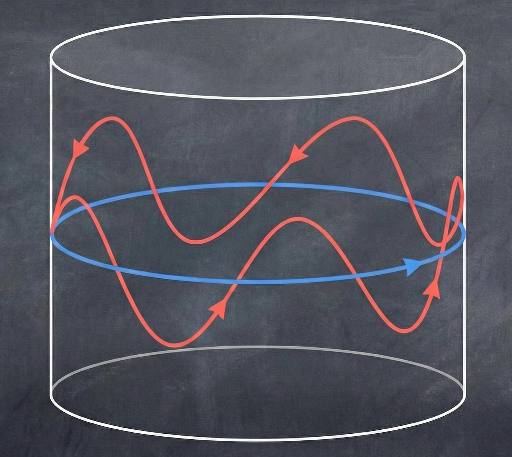

Prelude: 2015 Breakthrough Prize Panel at Stanford


2015 Breakthrough Prize Panel at Stanford

2015 Breakthrough Prize Panel at Stanford
https://www.youtube.com/watch?v=eNgUQlpc1m0
2015 Breakthrough Prize Panel at Stanford (paraphrased)
- Yuri Milner: “Could any of you imagine computers surpassing humans in mathematics like they did for chess, in a hundred or maybe a thousand years?”
- Terry Tao: “Well computers could act like a really powerful search engine, but it will still be humans driving the show, I'm pretty sure.”
- Maxim Kontsevich: “Actually, I don't think creating artificial intelligence is that hard. I think we'll have it pretty soon.”
- Yuri Milner: “You are sort of a contrarian here saying it will happen so quickly. What makes you so optimistic?”
- Maxim Kontsevich: “Actually it's pessimistic. I thought a little about it myself and I don't see any fundamental difficulty.”
- Yuri Milner: “Then why don't you just work on that?”
- Maxim Kontsevich: “I think it would be immoral.”
- Richard Taylor: “But isn't the way a computer plays chess just a big combinatorial check? I would be very surprised to see a computer win a Fields medal in our lifetime.”
- Terry Tao: “Well I think a computer could discover just by brute force a connection between two fields of mathematics, and then the person using the computer could actually flesh it out and maybe collect the medal.”
- Yuri Milner: “So Jacob, are you terrified at all by what Maxim is saying?”
- Jacob Lurie: “I'm not too worried...”
- assistant Professor of Mathematics at USC
- my research focus is symplectic geometry
(intersection of topology, differential geometry, algebraic geometry, dynamical systems, and theoretical physics) - in a nutshell, I try to compute pseudoholomorphic curves, which are solutions to a partial differential equation inspired by string theory, and use these to probe the geometry of high-dimensional spaces (e.g. 6d Calabi-Yau manifolds)
- like many others, simultaneously excited and concerned about transformations AI may bring

- The Conjecture: every closed exact Lagrangian submanifold in the cotangent bundle of a closed manifold $M$ is Hamiltonian isotopic to the zero section.

- usually attributed to Vladimir Arnold (circa 1986)

- interpretation in terms of classical physics
- considered far out of reach by current techniques
- has motivated many partial results and papers
- clean, unambiguous, elementary statement, but proof probably requires many advanced ideas
Epoch I
AI boosts
productivity
Epoch II
type (i) mathematical
superintelligence
Epoch III
type (ii) mathematical
superintelligence
Epoch I
AI boosts productivity
(arguably already in progress)

Epoch II
type (i) mathematical superintelligence

Epoch III
type (ii) mathematical superintelligence